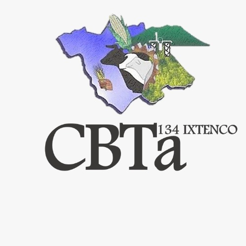
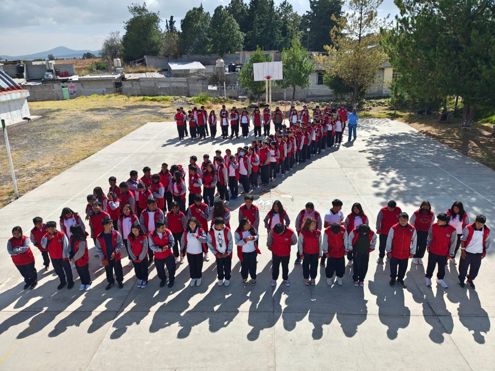
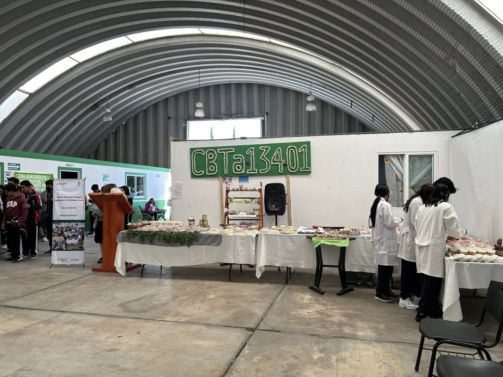
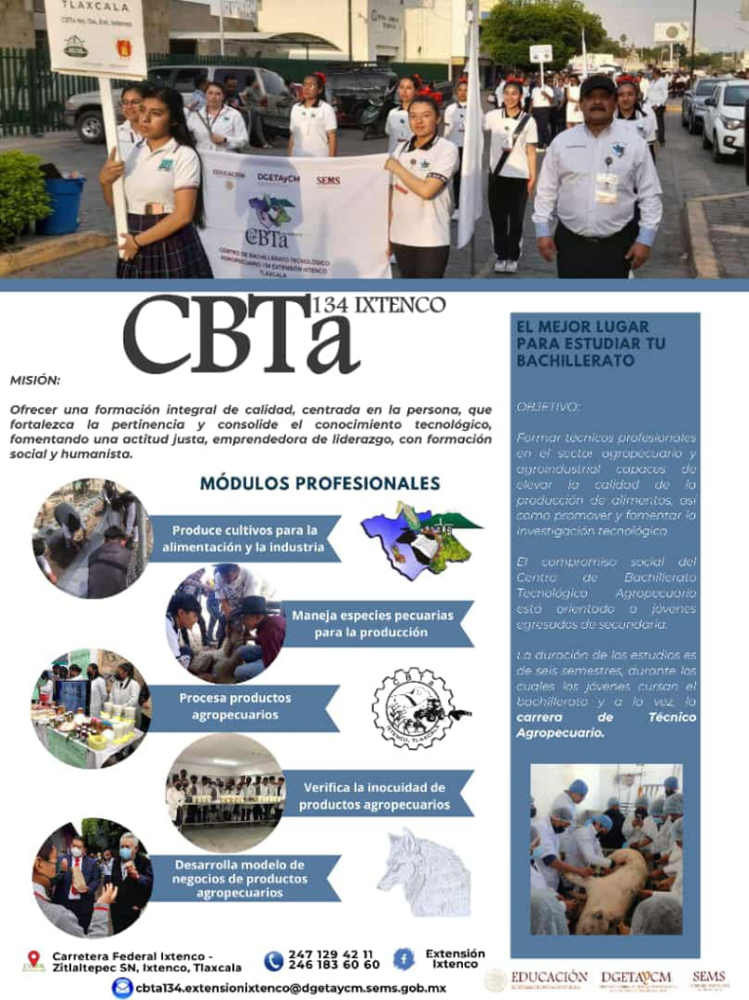
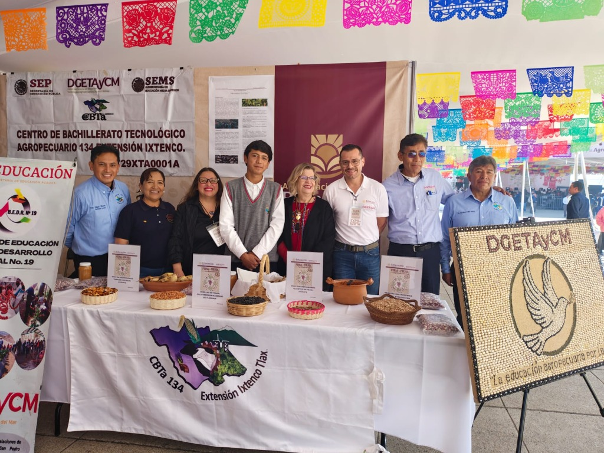
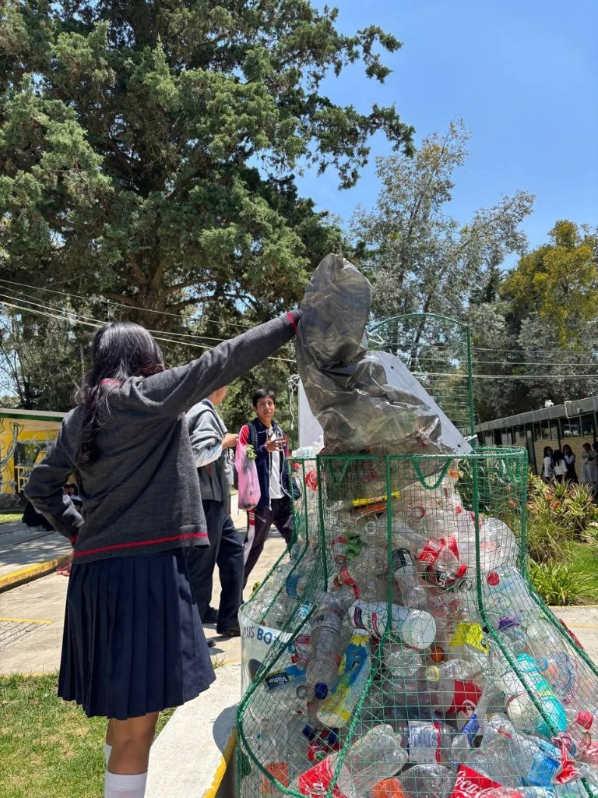

Extensión Ixtenco
CBTa 134 - Ixtenco, Tlaxcala
Extensión educativa del CBTa 134, desarrollando proyectos enfocados en las tradiciones locales y la conservación del entorno natural.
Sobre la Extensión
La Extensión Ixtenco forma parte de la red educativa del CBTa 134, ofreciendo educación tecnológica agropecuaria a los jóvenes de la región de Ixtenco y comunidades cercanas.
Los estudiantes de esta extensión participan activamente en el Programa Aula-Escuela-Comunidad, desarrollando proyectos que responden a las necesidades específicas de su comunidad, especialmente enfocados en la conservación de tradiciones y el cuidado del medio ambiente.
📍 Ubicación
Carretera a San Pablo Zitlaltepec S/N
Entre calle Prados y Pastores
Ixtenco, Tlaxcala
🌾 Patrimonio Cultural
Ixtenco es conocido por su rica herencia cultural otomí y sus tradiciones ancestrales relacionadas con el cultivo del maíz, lo que hace de esta extensión un punto clave para proyectos de conservación cultural y ambiental.
📞 Contacto Oficial
📧 Email:
cbta134.extensionixtenco@dgetaycm.sems.gob.mx
📍 Dirección:
Carretera Federal Ixtenco - San Pablo Zitlaltepec S/N,
Ixtenco, Tlaxcala



Proyectos PAEC de Ixtenco
Conservando tradiciones y cuidando el medio ambiente
Conservación de las Tradiciones de la Comunidad a Través del Maíz
Un proyecto que busca preservar y transmitir las tradiciones ancestrales otomíes relacionadas con el cultivo, procesamiento y uso del maíz nativo.
- Rescate de variedades de maíz criollo
- Documentación de técnicas tradicionales de cultivo
- Preservación de recetas y usos gastronómicos ancestrales
- Vinculación con la comunidad otomí

Colecta de PET para la Conservación del Medio Ambiente
Los estudiantes participan en campañas de recolección de PET contribuyendo a la conservación ambiental de la región.
- Recolección y clasificación de residuos PET
- Concientización ambiental en la comunidad
- Fomento de la cultura del reciclaje

Galería de Actividades
Nuestros estudiantes en acción
Conoce otras sedes
Explora las demás escuelas del Programa PAEC